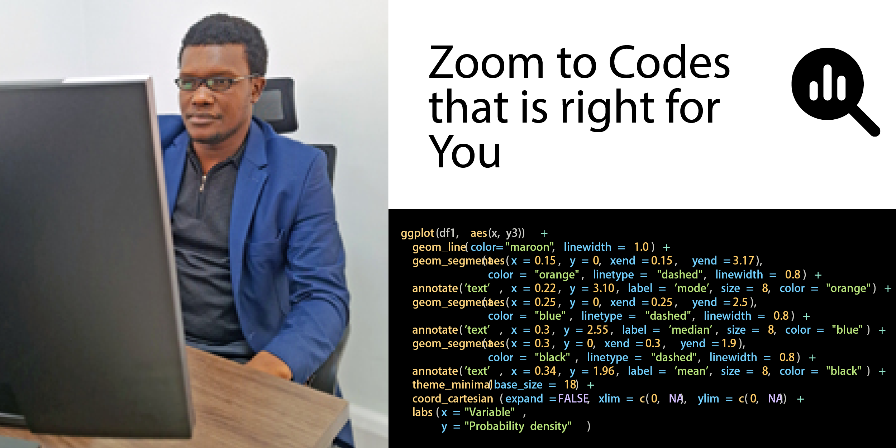
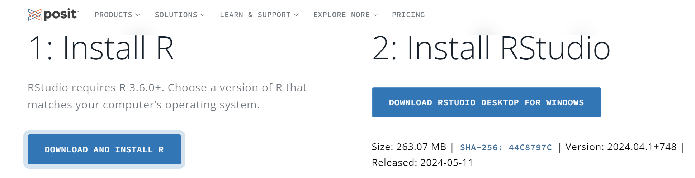

Welcome to Datika!!!
I’m glad you’re here at our website, datika! As an avid enthusiast of statistics and the R programming language, we’ve created this platform to share our experiences, research and projects with fellows. Datika is more than just a showcase of our work – it’s a thriving community where you can engage with the content, expand your knowledge, and connect with others in the fascinating world of statistics and R.
Goals for training
Our prime goal for this training is to enables you to understand, transform, analyze, and visualize data in a variety of ways. Whereas initial lessons provide an introduction to data types, data visualization, and exploratory data analysis (using base R and tidyverse packages), later lessons address more advanced issues of programming, running simulations, and predictive modeling. The course uses the technologies and tools provided by R (R Core Team, 2023), the RStudio IDE, RMarkdown, including some key packages of the tidyverse (Wickham et al., 2019) (e.g., dplyr, ggplot2, tibble, and tidyr).

R and RStudio installation
To teach and learn data science, we need the right tools, materials (information), and agree on some rules (structure). Working through this course assumes an installation of three types of software programs:
- An R engine: The R project for statistical computing. A current distribution of R — e.g., R version 4.4.0 (2024-04-26) — for your machine can be downloaded from one if its mirrors.
- An R interface: The RStudio IDE (by Posit provides an integrated development environment for R.

- Additional tools: The R packages of the tidyverse (Wickham, 2023b).
Enjoy learning with a video that highlight key aspect of tidyverse and how relevant this ecosystem is chainging the digital age of data organization, manipulation, analysis, modelling and even presentation of the results using a plephora of rendered documents.
Welcome to the R world
Once you have installed the software, take a moment to reflect on a curious fact: You just installed software that was written by hundreds of highly-trained experts, who dedicate years of their professional lives to its creation and improvement. Interestingly, you could just download their products and had to pay nothing to do so. This is possible because most R developers subscribe to an open source philosophy that was ridiculed by corporations when it started in the 1980s and 1990s, but has become one of the most powerful paradigms in software development.
But actually, you did invest time and effort to install all these programs and packages. And by doing so, you are taking first steps to join a world-wide community that shares certain interests, assumptions, and ideals. So, welcome to the R community — but be aware: Learning R can profoundly transform your life.
Working with RStudio
The distinctions between R, RStudio, and R packages are somewhat confusing at first. Thus, it is good to know that we will typically be using the RStudio IDE to interact with R and manage our library of R packages. The basic idea of an integrated development environment (IDE) is to make it easier to access and manage all R-related concerns through a single interface. So think of RStudio as your console or dashboard that allows you to monitor and control the R engine underneath.
Given its large variety of functions, the RStudio interface is divided into many sub-windows that can be arranged and expanded in various ways. At this point, we only need to distinguish between the main Editor window (typically located on the top left), the Console (for entering R commands), and a few auxiliary windows that may display outputs (e.g., a Viewer for showing visualizations) and provide information on our current Environment or the Packages available on our computer. A useful window is Help: Although its main page provides mostly links to online materials, any R package contains detailed documentations on its functions and examples that illustrate their use.
The Posit cheatsheet on the RStudio IDE and illustrates that there are dozens of other functions available. As you get more experienced, you will discover lots of nifty features and shortcuts. Especially foldable sections and keyboard shortcuts (see Alt + Shift + K for an overview) can make your life in R a lot easier. But don’t let the abundance of options overwhelm you — I have yet to meet a person who needs or uses all of them.
Developer and Maintainer
Masumbuko Semba designed this static website along with its dynamic blog. This website was designed and developed using quarto and was deployed and hosted in GitHub. You can browse and learn more about Semba’s work in his resume
Authorized License
datika by The team is licensed under Attribution-NonCommercial-NoDerivatives 4.0 International


Visit here for more information about the license.